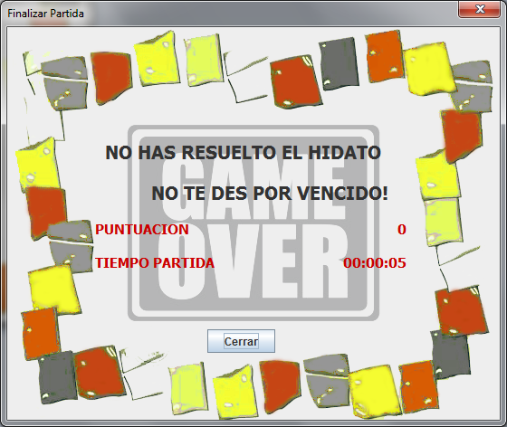

Cuando termine un Hidato, recibirá un mensaje en función de la forma cómo lo haya hecho.
Si resuelve la partida por primera vez, se le mostrará el siguiente mensaje:
Se le indican la puntuación, el tiempo que ha empleado en resolver el Hidato, la posición en el ránking que ocupará con la puntuación obtenida y el número de pistas que ha empleado para resolver el Hidato.
Si resuelve una partida guardada que ya había resuelto anteriormente, el mensaje que se le mostrará será el siguiente:
En este último caso, siempre obtendrá una puntuación de 0, y se le mostrará también el tiempo que ha tardado en resolverlo.
Por último, si elige la opción 'Resolver Hidato', aparecerá el siguiente mensaje:

En cualquiera de los tres casos, el tablero quedará bloqueado y no podrá ser editado, pero éste no desaparecerá hasta que se cargue una partida o se comience una nueva.